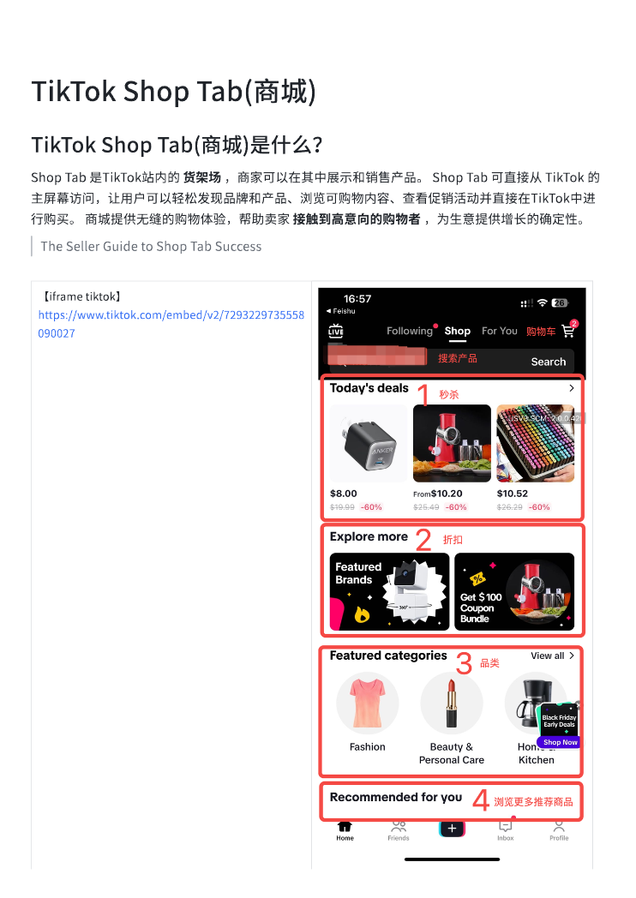
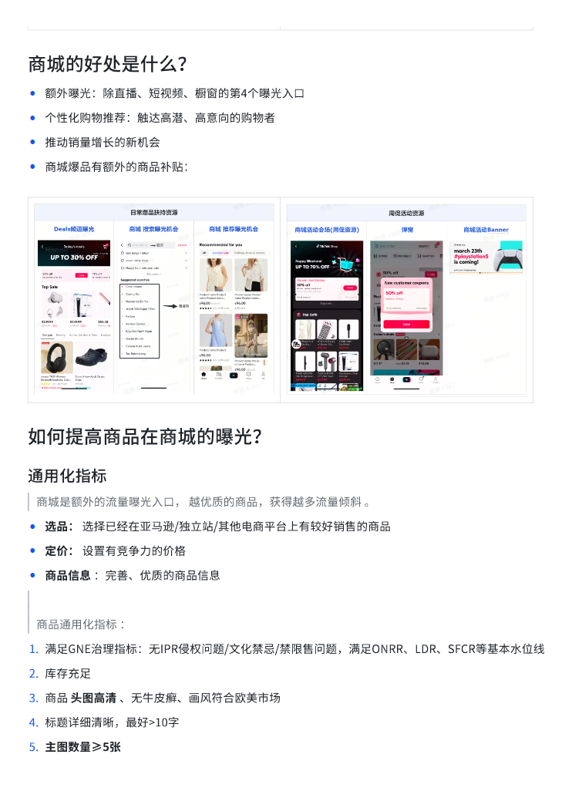
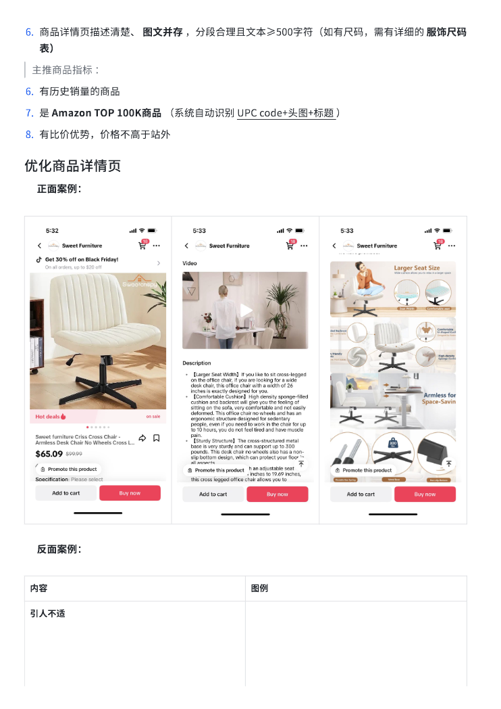
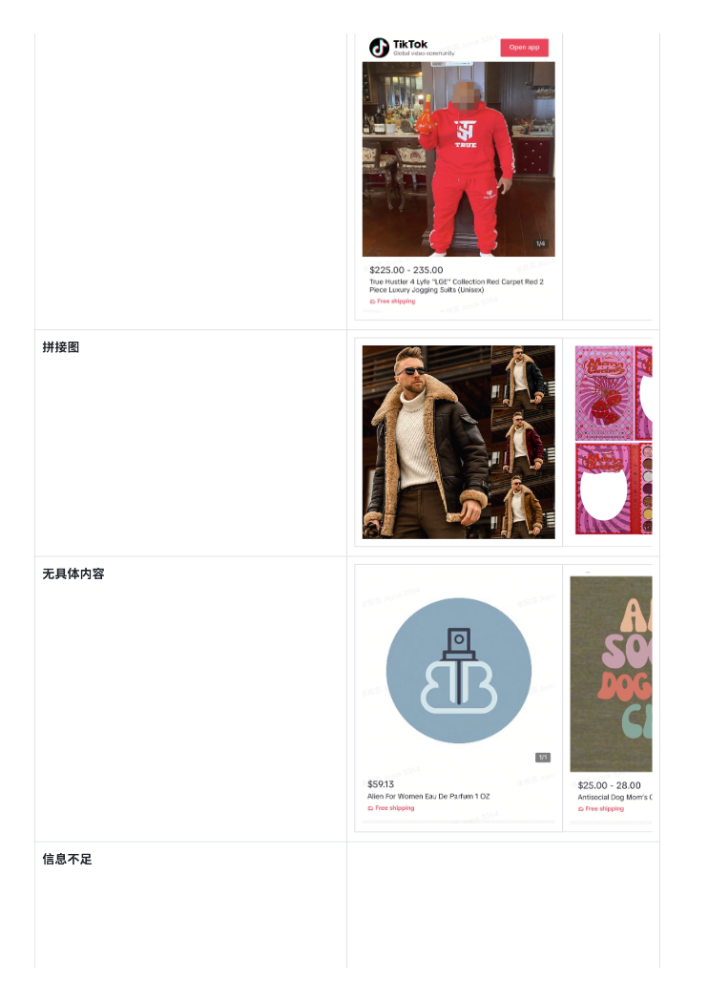
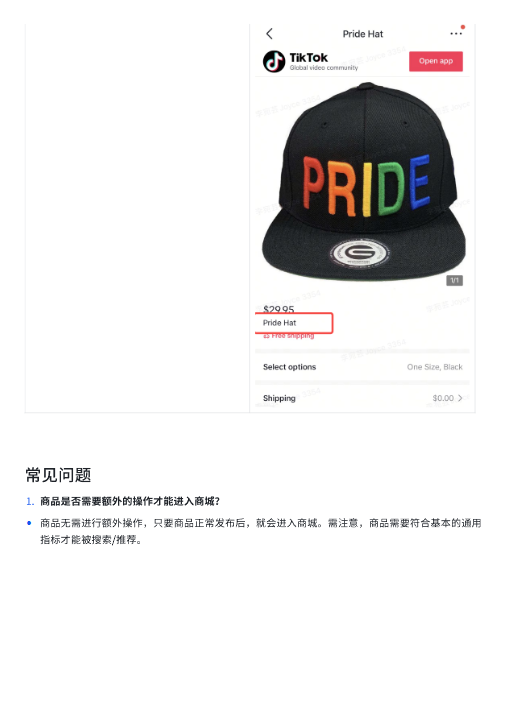

第 1 页

查看文字
TikTok⟦U+0001⟧Shop⟦U+0001⟧Tab(商城)⟦U+0001⟧
TikTok⟦U+0001⟧Shop⟦U+0001⟧Tab(商城)是什么？⟦U+0001⟧
Shop⟦U+0001⟧Tab⟦U+0001⟧是TikTok站内的⟦U+0001⟧货架场⟦U+0001⟧，商家可以在其中展示和销售产品。⟦U+0001⟧Shop⟦U+0001⟧Tab⟦U+0001⟧可直接从⟦U+0001⟧TikTok⟦U+0001⟧的
主屏幕访问，让用戶可以轻松发现品牌和产品、浏览可购物内容、查看促销活动并直接在TikTok中进
行购买。⟦U+0001⟧商城提供无缝的购物体验，帮助卖家⟦U+0001⟧接触到高意向的购物者⟦U+0001⟧，为生意提供增⻓的确定性。⟦U+0001⟧
The⟦U+0001⟧Seller⟦U+0001⟧Guide⟦U+0001⟧to⟦U+0001⟧Shop⟦U+0001⟧Tab⟦U+0001⟧Success⟦U+0001⟧
【iframe⟦U+0001⟧tiktok】
https://www.tiktok.com/embed/v2/7293229735558
090027⟦U+0001⟧
第 2 页

查看文字
商城的好处是什么？
•额外曝光：除直播、短视频、橱窗的第4个曝光入口⟦U+0001⟧
•个性化购物推荐：触达高潜、高意向的购物者
•推动销量增⻓的新机会
•商城爆品有额外的商品补贴：
如何提高商品在商城的曝光？
通用化指标
商城是额外的流量曝光入口，⟦U+0001⟧越优质的商品，获得越多流量倾斜⟦U+0001⟧。⟦U+0001⟧
•选品：⟦U+0001⟧选择已经在亚⻢逊/独立站/其他电商平台上有较好销售的商品⟦U+0001⟧
•定价：⟦U+0001⟧设置有竞争力的价格⟦U+0001⟧
•商品信息⟦U+0001⟧：完善、优质的商品信息⟦U+0001⟧
商品通用化指标⟦U+0001⟧：⟦U+0001⟧
1.满足GNE治理指标：无IPR侵权问题/文化禁忌/禁限售问题，满足ONRR、LDR、SFCR等基本水位线⟦U+0001⟧
2.库存充足
3.商品⟦U+0001⟧头图高清⟦U+0001⟧、无牛皮癣、画⻛符合欧美市场⟦U+0001⟧
4.标题详细清晰，最好>10字⟦U+0001⟧
5.主图数量≥5张⟦U+0001⟧
第 3 页

查看文字
6.商品详情⻚描述清楚、⟦U+0001⟧图文并存⟦U+0001⟧，分段合理且文本≥500字符（如有尺码，需有详细的⟦U+0001⟧服饰尺码
表）
主推商品指标⟦U+0001⟧：⟦U+0001⟧
6.有历史销量的商品
7.是⟦U+0001⟧Amazon⟦U+0001⟧TOP⟦U+0001⟧100K商品⟦U+0001⟧（系统自动识别⟦U+0001⟧UPC⟦U+0001⟧code+头图+标题⟦U+0001⟧）⟦U+0001⟧
8.有比价优势，价格不高于站外
优化商品详情⻚
✅正面案例：⟦U+0001⟧
❌反面案例：⟦U+0001⟧
内容⟦U+0001⟧图例⟦U+0001⟧
引人不适⟦U+0001⟧
第 5 页

查看文字
拼接图⟦U+0001⟧
无具体内容⟦U+0001⟧
信息不足⟦U+0001⟧
第 6 页

查看文字
常⻅问题
1.商品是否需要额外的操作才能进入商城？
•商品无需进行额外操作，只要商品正常发布后，就会进入商城。需注意，商品需要符合基本的通用
指标才能被搜索/推荐。⟦U+0001⟧